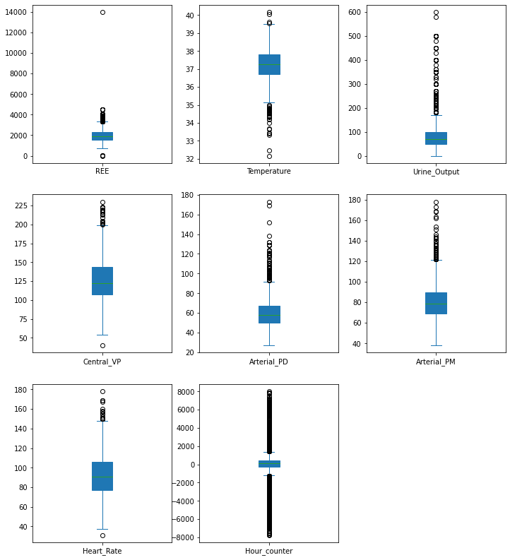

A regression project about the body fat data set using linear regression ridge,lasso and elastic.
A jupyer lab notebook containg a data analysis project on the first name dataset of the Israel Central Bureau of Statistics.
A project that was done with the collabartion of Belinson hospital staff trying to predict the amount of calories needed for trauma patients in order to replace the currently expensive and hard to use measuring tool.
